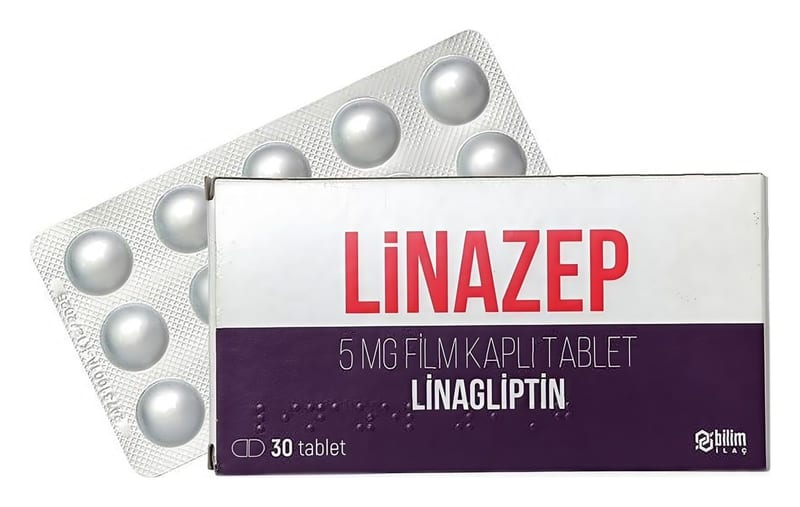

Linazep 5 mg Film Kaplı Tablet, 30 Adet

Ne için kullanılır
KT · Bölüm 1LİNAZEP, linagliptin etkin maddesini içerir ve “oral antidiyabetikler” olarak adlandırılan bir ilaç grubuna aittir. Oral antidiyabetik ilaçlar, yüksek kan şekeri düzeylerini tedavi etmek için ağız yoluyla kullanılır. Bu ilaçlar, vücudunuzda kan şekeri seviyesinin düşürülmesine yardımcı olur.
LİNAZEP, erişkin Tip 2 diyabetli hastalarda, eğer hastalık oral antidiyabetik ilaçlardan (metformin veya sülfonilüreler) biri ile veya tek başına diyet ve egzersiz ile yeterince kontrol edilemiyorsa kullanılır. LİNAZEP, diğer antidiyabetik ilaçlarla, örneğin; metformin, sülfonilüre grubu ilaçlar (örneğin; glimepirid, glipizid), empagliflozin veya insülin ile birlikte kullanılabilir.
Doktorunuz veya hemşireniz tarafından size önerilen diyet ve egzersize uymanız çok önemlidir.
LİNAZEP, karton kutuda, 30 tabletlik Poliamid/Al/PVC/Al folyo blister ambalajda, kullanma Bu ilacı kullanmaya başlamadan önce bu KULLANMA TALİMATINI dikkatlice okuyunuz, çünkü sizin için önemli bilgiler içermektedir. • Bu kullanma talimatını saklayınız. Daha sonra tekrar okumaya ihtiyaç duyabilirsiniz. • Eğer ilave sorularınız olursa, lütfen doktorunuza veya eczacınıza danışınız. • Bu ilaç kişisel olarak sizin için reçete edilmiştir, başkalarına vermeyiniz. • Bu ilacın kullanımı sırasında, doktora veya hastaneye gittiğinizde doktorunuza bu ilacı kullandığınızı söyleyiniz. • Bu talimatta yazılanlara aynen uyunuz. İlaç hakkında size önerilen dozun dışında yüksek veya düşük doz kullanmayınız.
Sayfa 2 talimatı ile birlikte sunulmaktadır.